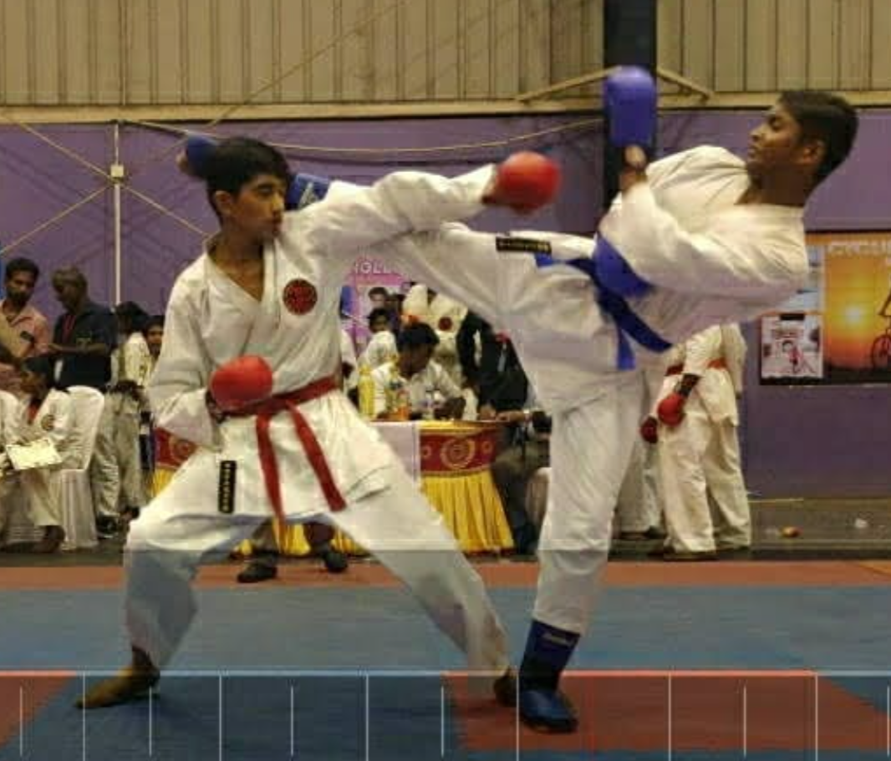
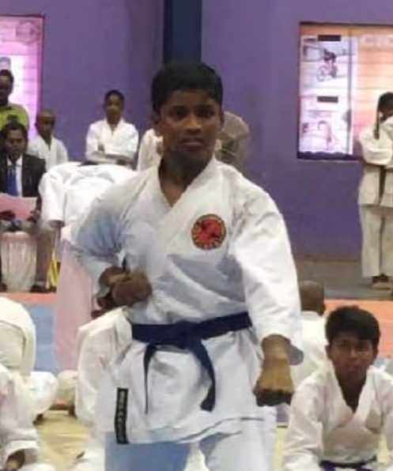

Black Belt
Certified
4x National
Gold & Silver Medalist
4 Straight Years
State Gold in Kata
Emotional Control & Stance
Karate started at a very young age. More than a physical sport, it taught me how to control emotions during high-adrenaline moments, maintain focus under pressure, and develop tactical balance. Trained under Sensei Mr. Eashwer Kumar who instilled precise stance and discipline.


National Titles & Team Kata
Won the Nationals twice with Gold and Silver in Kata, alongside two Bronze medals in Kumite representing Tamil Nadu at JJ Indoor Stadium, Chennai. State Gold Medalist in Kata for 4 straight years, securing the Best Team award in Team Kata for 2 consecutive years.